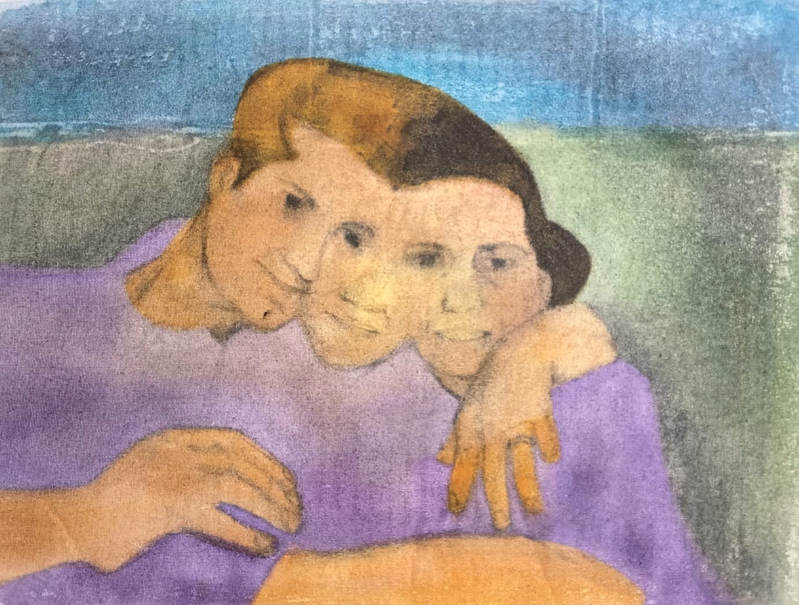
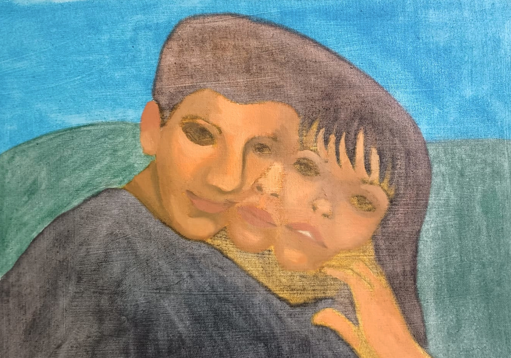
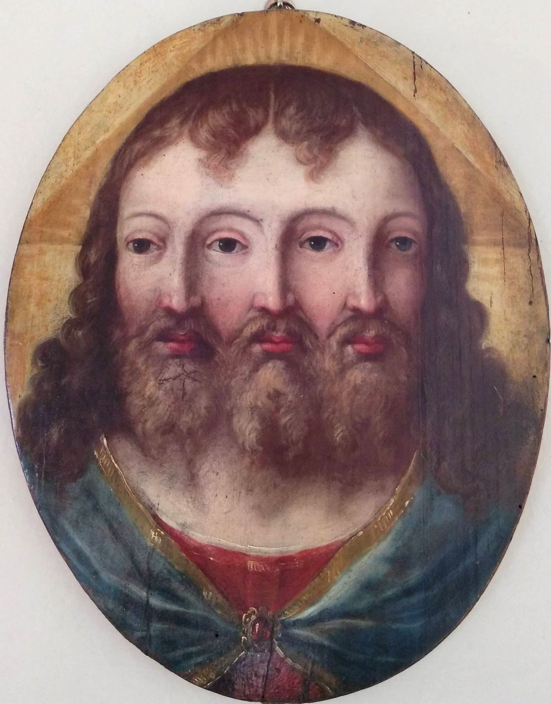
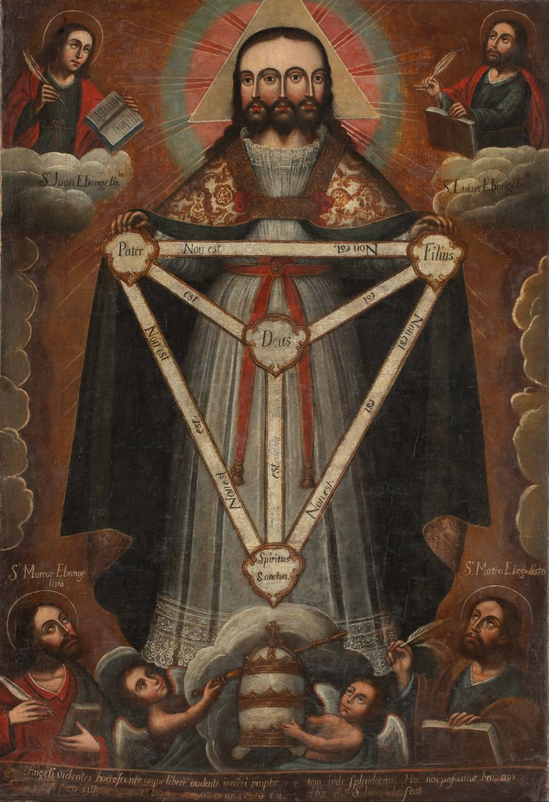
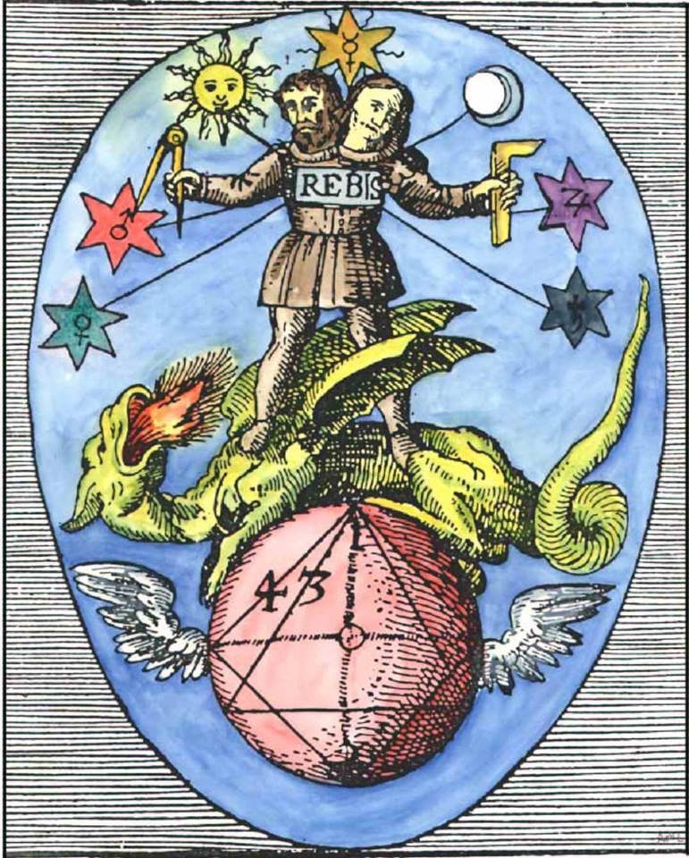

Óleo sobre tela
Anima/Animus e o Rebis Interior
Este trabalho está enraizado na psicologia profunda de Carl Jung e no simbolismo antigo da alquimia. Em sua essência, explora a Anima e o Animus: os arquétipos feminino e masculino que existem dentro de todos os indivíduos, independentemente do gênero. Jung considerava essas figuras internas essenciais para o equilíbrio psicológico: a Anima representa a emoção, a intuição e a sensibilidade relacional, frequentemente reprimidas nos homens; o Animus, por outro lado, incorpora a razão, a assertividade e a estrutura, frequentemente suprimidas nas mulheres. Quando se nega qualquer uma dessas forças, a psique se fragmenta.
Para visualizar essa dualidade interna, recorro ao símbolo alquímico do Rebis, um ser mítico composto por aspectos masculinos e femininos em um único corpo. O Rebis, frequentemente representado coroado e segurando símbolos do sol e da lua, simboliza o casamento alquímico, ou a união dos opostos. Para os alquimistas, essa fusão não era apenas simbólica, mas um caminho para a iluminação espiritual e a plenitude. Na minha interpretação, o Rebis torna-se uma figura transgênero ou de gênero fluido, além dos binarismos, buscando o divino não na separação, mas na integração.
Através do desenho a carvão, camadas de veladura e verniz, trabalho com as dualidades físicas de luz e sombra, usando gradientes para representar o espectro entre as energias masculina e feminina. As figuras emergem não de absolutos, mas de estados intermediários — ambíguos, reflexivos, em evolução. Esses gradientes ecoam como gênero e identidade realmente funcionam: como contínuos fluidos em vez de categorias rígidas.
No mundo de hoje, onde os debates de gênero estão cada vez mais polarizados, esse diálogo interno entre Anima e Animus parece mais urgente do que nunca. Meu trabalho sugere que a cura não está em escolher lados, mas em ouvir para dentro, honrando tanto o sol quanto a lua interior. Ao reconhecer e integrar nossos próprios opostos internos, nos aproximamos do Rebis, um ser completo em si mesmo.
O que ela se lembra de mim?: Este conjunto de obras é uma investigação visual e emocional sobre o lento desvendamento da memória através da lente da experiência da minha avó com a doença de Alzheimer. É tanto um arquivo pessoal quanto uma investigação poética sobre o esquecimento, o silêncio e a instabilidade da identidade.
As pinturas, objetos e instalações que compõem esta série são construídos através de processos de acumulação e apagamento, ecoando a natureza cíclica do Alzheimer: lembrar, perder e, às vezes, inventar. Camadas de acrílico, óleo e tecido são aplicadas e removidas, deixando vestígios, lacunas e formas borradas. Frequentemente trabalho com fotografias de família, fragmentos escritos e gravações de áudio de conversas com minha avó antes e depois do diagnóstico, usando-os não como documentação, mas como materiais de transformação. Este não é um retrato de uma doença. Em vez disso, é uma meditação sobre a memória como material, algo que pode se dissolver, tornar-se transparente ou assumir uma nova forma ao longo do tempo. Ao fazer isso, reflito sobre o que significa cuidar, testemunhar e carregar a história de alguém quando essa pessoa não pode mais contá-la. Estou particularmente interessada em como a perda de memória altera nossa percepção do corpo e do tempo. Em algumas obras, uso têxteis e bordados para espelhar os gestos repetitivos de cuidar. Em outras, vídeo e som são usados para evocar confusão, silêncio ou ausência de resposta. O espaço doméstico, especialmente a mesa, a cama e a moldura da fotografia, reaparece ao longo da obra como um palco silencioso, porém carregado de significado.Obras ainda estão em andamento


Referências Visuais


